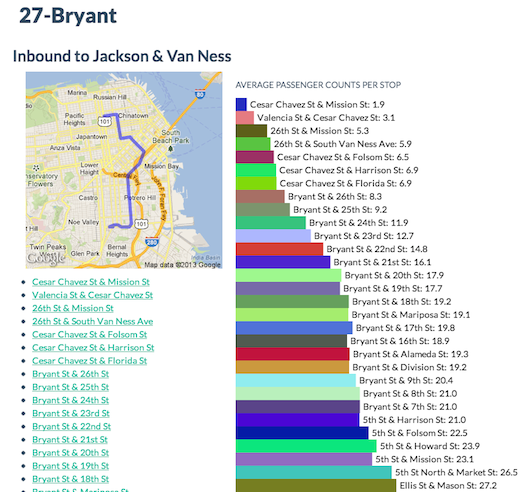

Starting in early 2013 Luckybird took part and became finalists in the Mozilla Ignite Challenge. The future is bright for gigabit technology and the community behind it - we're only at the tip of the iceberg.
The challenge proposed by Mozilla Ignite was to design and build apps for the faster, smarter Internet of the future. Specifically a future where:
Our first proposal for the challenge was a huge vision of an overarching network that connected transit users, planners, and operators. We saw how users interacted with MobileMuni and imagined a world where location data would be streamed between the user and the transit operator in order to create optimal bus routes in real-time.
This was a sexy and futuristic vision, but it quickly became apparent that building a prototype of it would be a bureaucratic nightmare and would also probably take years to implement. We wanted to build something that could provide value now, but could also scale for a future when unrestricted networks and gigabit Internet is the norm. So we took a step back and did the most important thing anyone building a product can do, we talked to users.
In this case talking to users meant getting in touch with transit agencies and other transit professionals. We talked with lots of transit professionals, but the most helpful was Chris Pangilinan of the SFMTA. Chris told us that the two biggest questions transit planners face is where and why vehicles are slowed down on their route, and how do they ensure that their system is providing service to the places people need to go. With these questions in mind, we got to work.
We knew that we had to develop tools that could assist the SFMTA in analyzing the massive amounts of data that they collected everyday to get closer to answering the questions of where and why vehicles are slowed down on their route, and how do they ensure that their system is providing service to the places people need to go. While we were able to get vehicle location data from NextBus, we had no idea how to get the passenger data about when and where people got on and off of stops. Luckily, Chris let us know about an international urban data challenge that the SFMTA supplied a weeks worth or passenger data for. We immediately downloaded the file (it had over 6,000,000 data points, which is pretty insane for only a week of data).
While I was talking to users, Cam was learning Clojure ; a modern dialect of Lisp built for functional programming. Cam wanted to build our project in Clojure because it is designed to be highly parallel. This meant our framework scaled for a gigabit future where there is no limit to how fast information can travel and processing speed is never a bottle neck.
After weeks of development, our end project was a platform that analyzes transit and urban data to uncover usage and traffic trends that can help transit authorities make smarter decisions around scheduling and route planning. We are not data scientists, but we modeled the data to reflect route usage and efficiency, specifically showing the on and off boarding at different stops along a route and also where on the route buses were getting ahead of or behind schedule.
With only a week of user data (and only for certain routes) this analysis platform is far from complete. While we are continuing to add to the project, we decided to open source all of our code on Github so that other developers and transit professionals can create their own analysis tools and models on top of our platform.
LuckyBird would like to give special thanks to Mozilla Ignite’s Will Barkis - without his help and support from the very beginning our project would have never come to life. We would also like to thank Chris Pangilinan of the SFMTA for giving us a big picture view of the problems that transit planners face. Lastly, we would like to thank Rich Hickey, the creator of Clojure, for inventing such an incredibly dynamic language to write our project in.
If you would like to use the framework we built for this challenge it has all been open sourced here on Github.